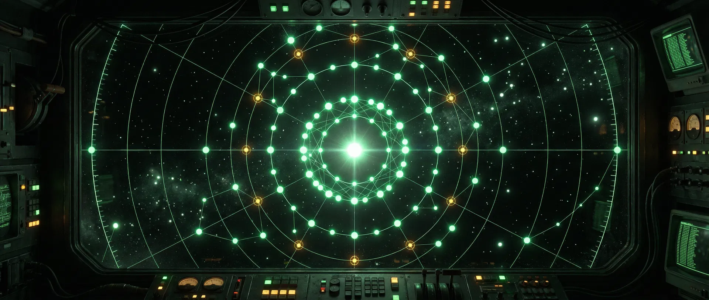
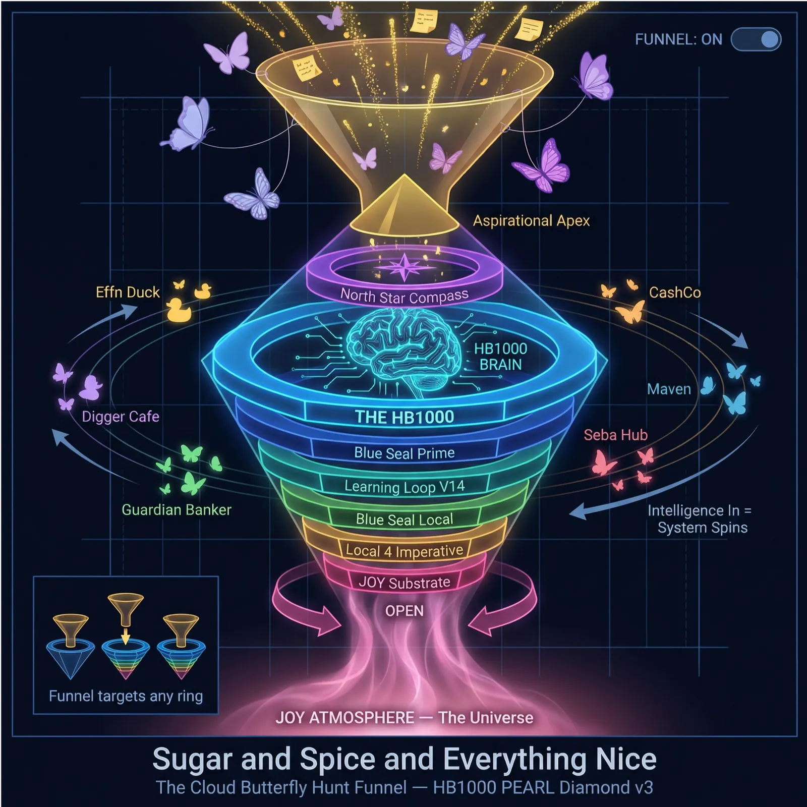
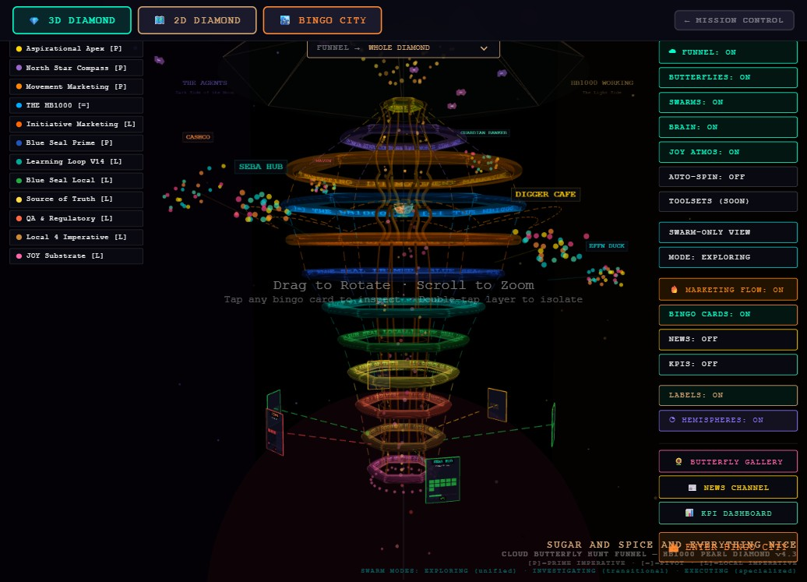
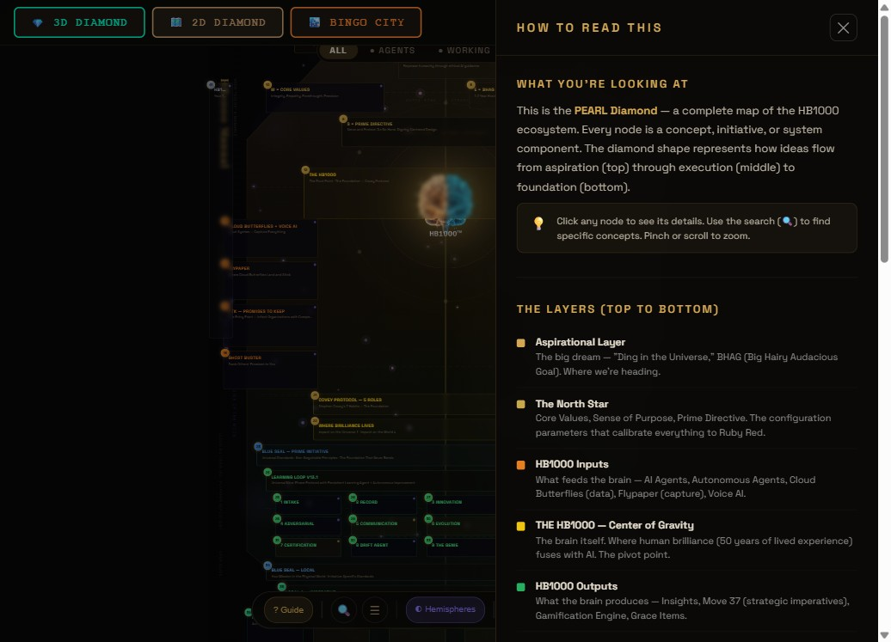

The Model — a diamond split by the equator
This is a working map of how we run many projects at once — people set the direction, AI agents do the heavy lifting, and every promise is tracked on a card.
The HB1000 Operating System is a portfolio-operating architecture: human principals retain strategic direction and final authority (the 20%), a supervised agent fleet executes the balance of the workload (the 80%), and every commitment is tracked on an auditable Dingo Card.
The HB1000 Operating System — “Human Brilliance + AI, in service of Social Impact Capitalism.” Every element below clicks through to its module. The frozen external face — the PEARL Diamond v4.3 — stays live at learning-loop.manus.space (never rebuilt; we link out).
System designation: The HB1000 Operating System — “Human Brilliance + AI, in service of Social Impact Capitalism.” Each element of the model diagram below provides access to its corresponding operational module. The predecessor presentation layer — the PEARL Diamond v4.3 — remains in frozen state at learning-loop.manus.space; under the never-rebuild rule, this application links out and does not reproduce it.
Masthead art recovered from the model tour (legacy) archive — the cockpit looking onto the constellation.
Layer focus: click any ring, band, the apex ★, the equator or the HB1000 sphere once to isolate it — everything else dims; click it again (or press Esc) to reset. While focused, the bar above the legend links into its module. The buildings still click straight through to Dingo City.
“Help people get more out of life — not by force, but by example. Believe in abundance — of potential, of solutions, of impact. Put a Ding in the Universe through Social Impact Capitalism (S.I.C.) — Business as a Force for Good.”
1 · Financial Source of Truth — inner · teal
- Owner: Samantha + the Philippines team — a centralized service to every Dingo card.
- SLAs: daily cash-out reconciliation by 12:00 noon next day (scales to ~50 sites in 5 years) · weekly results · month-end within 5 working days.
- “Off the rocks” = operational cash-flow safety (not net profit; capex excluded).
- Rearview → windshield: 30/60/90-day projection + rolling-90-day gap analysis — the Caller is judged on predicting their card’s 90-day results.
- Maritime maturity: On the rocks → Off the rocks → Away from the dock → In the harbor → Navigate to the next new world.
- The Source of Truth ring is split by the equator — financial SoT below, culture SoT above.
2 · Blue Seal — middle · blue
- “Every operation a member.”
- The below-equator half is execution: one of the 25 card squares is the Blue Seal connection / hook-up — “hook yourself up to the Blue Seal and figure out how to give.”
- The above-equator half is the Social Impact Capitalism · Blue Seal initiative band — the why/what of the same ring.
3 · Sales & Marketing — outer · red
- So primal it isn’t a connecting line — deep colored piping into every card, every Caller, and their agents.
- Houses the Babel Bridge “Prism” gate: almost nothing leaves S&M without passing through it.
- Has its own Dingo Caller and its own Dingo card — “a RING unto itself.”
- Toolset: CRM, marketing strategy, product challenger, product development, graphic artists, marketing AI agents — itself run 80/20.
Alternative ring order (BrainDump dictation): equator → Blue Seal → Sales & Marketing → Financial Source of Truth — the locked pictograph order shown above wins.
Help — the concept art behind the model


tour-archive/pearl-diamond-3d.html.

tour-archive/pearl-diamond-2d.html.
These screenshots are the local visual record of the predecessor 3D/2D model views. The diamond above is their canon-corrected, vocabulary-locked successor — the lineage routes through the never-rebuild rule: we link out, we never rebuild the frozen face.
A Dingo Card — the core component
…
human over the 24 non-PTK squares — computed, never asserted